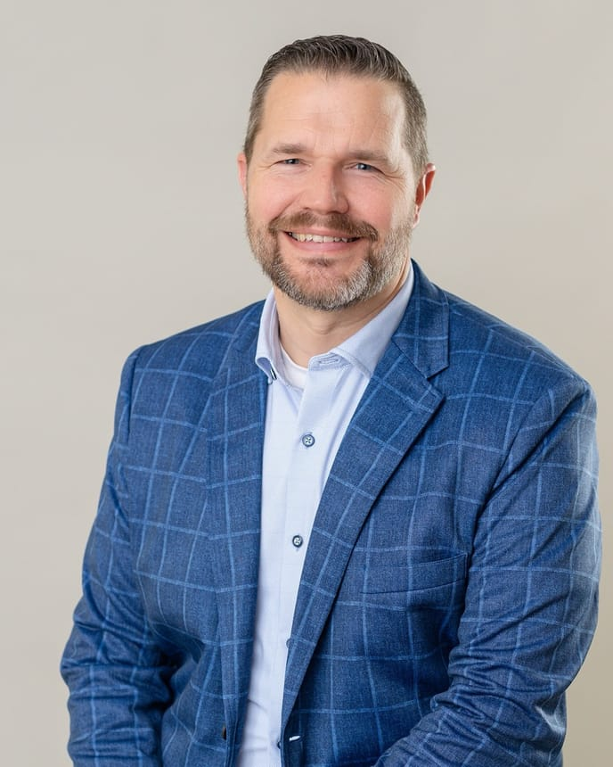

Founder & CEO
Alpinist Studios
A global engineering partner for staff augmentation, fractional engineering, and advisory on vital software projects.
Founder, operator, and advisor to software companies.
For more than 25 years I’ve built, financed, and advised software businesses — as a founder, a CEO, a finance operator, and now an advisor. I care about useful products, honest numbers, and the unglamorous work of making a company last.

I work where software, capital, and operating experience meet. Today that means three things.
A global engineering partner for staff augmentation, fractional engineering, and advisory on vital software projects.
Helping entrepreneurs get AI-generated and vibe-coded software ready for the real world — audits, last-mile engineering, and launch support.
Advisory support for the team at Besti Co.
Current roles are above. Below is the operating history — from the end of the IntelliStack chapter back to where it started.
At IntelliStack (formerly Formstack), I led the company in delivering a versatile no-code suite that simplifies data management and automates workflows for more than 32,000 organizations globally.
Oversaw the strategic direction and operations of Blue Door Ministries, focusing on equipping local leaders in Europe and Africa.
Developed and nurtured relationships with lenders and investors for a leading national healthcare company.
Self-employed · Financial services
Financial Advisor
Co-founder & Principal · Full-time
Network Administration
Podcasts, interviews, and bylines on no-code, remote work, company-building, and the next wave of software in Oklahoma.
Showing 13 items.
Also in Chief Healthcare Executive · Entrepreneur · VentureBeat · Formstack
I’m an Oklahoma City native who has spent more than 25 years moving between software, finance, and the teams that make both work.
I started in network administration at Anderson University, then moved into financial services — UBS, an independent advisory practice, and nearly four years as VP of finance and investor relations at Foundation Surgery Affiliates, where I helped facilitate more than $500M in debt and equity financing.
In 2010 I stepped in to lead IntelliStack (formerly Formstack) for what was meant to be six months. I stayed 13 years, built a remote-first team of 250 people across 100 cities, and helped grow a no-code platform used by more than 32,000 organizations. I left in 2023.
Today I’m building Alpinist Studios and Vibecore, advising Besti Co., and spending time with founders who are thinking hard about what comes next. I care about useful software, honest numbers, and the unglamorous middle of building a company.
“Oklahoma doesn’t need to become the next Silicon Valley, and we certainly don’t want the traffic!”Chris Byers · The Journal Record · 2026
I’m always glad to talk with founders, operators, investors, and journalists working on something ambitious. The fastest way to reach me is email.
Prefer a call? Email a few times that work and I’ll send a link.